| Match Report - 04 June 2011 |
|
|
|
|
|
|
|
|
|
|
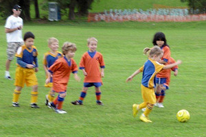
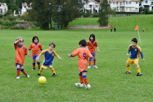
The U6 Green were back at River glade to meet the All Saints (B) team on their
home turf. There was anticipation in the air before the game and the teams were
hovering on the field and although we were attacking it took some time to break
through the defence of the All Saints.
The team (and the parents) were very happy
when Jasmine scored the goal to take the team into the lead. The team took charge
and the goals kept coming. Jasmine led the charge with 5 goals, Blake secured 2
goals, Will scored 2 very convincing goals and Christian scored 1 goal.
The are constantly improving and some good passing was seen amongst the team to
get to goals. Excellent defence from Christian and Blake and some very good
attempts to score from William. Will and Elijah showed some excellent ball
skills. The player of the match was awarded to jasmine for her goal scoring.
- Sarah Robson
|
|
|
|
U6 Purple A
1 - 1
|
|
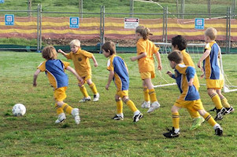
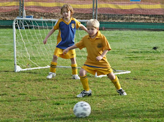
The boys had a full team today so were bursting with energy and enthusiasm to
play against their fellow North Ryde club members. It was a very even match and
despite the low score from both teams there were plenty of great soccer skills
being shown.
Luke & Liam both had a few near misses in the first half. Luke kept with it and
scored our only goal in the second half. Eli made some excellent passes and
Cameron had a few great runs up the field with superb dribbling and excellent
control of the ball. Eli and Alex both saved a few goals and there was excellent
defense from Lachlan as well. Ethan stayed well up with the play and was good in
defense also.
Lachlan was player of the match for excellent defense, working hard to stay with
the ball and his focus throughout the game.
- Nerradene Wolken
|
|
|
|
U6 Purple B
1 - 1
|
|
What a lovely morning we had this morning. With North Ryde Purple B taking on
North Rdye Purple A. It was mate against mate. With a little pre-match planning
to make sure we didn't wear the same shirts the game was on.
The teams were pretty evenly matched. We stood off the ball a bit not attacking
as well as previous weeks but by half time only Reilly had scored, putting us in
the lead.
The second half was much the same as the first. Nobody really committing to the
ball because they were playing their friends. In the end the final score was 1-1.
Encouragement certificate went to Sean for getting in to the game more. Player of
the week trophy went to Ethan who after a slow start had a most improved game
with some great tackles and kicks.
- Meryl
|
|
|
|
U6 Red A
10 - 1
|
|
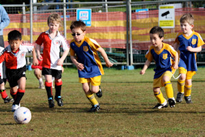
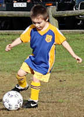
Another chilly morning greeted the boys, who were keen for a win after last weeks
very close game.
After kick off, it wasn't long before Hayden scored the first goal of the match,
proudly proclaiming "I didn't even kick it as hard as I could". Shortly after,
the Dragons equalised off an unfortunate own-goal. Not to be deterred, Ben took
possession, and dribbled the ball practically the full length of the field to
score an impressive goal. Very well done!
Jake was as quick as usual, intercepting the ball, and running all over the field.
Ben was showing impressive ball control with his dribbling, and just missing
another goal. Shortly after, he gained possession, and scored his second goal.
Josh then intercepted a great rebound and easily kicked the ball in for a goal
too. Near the end of the 1st half, some great teamwork saw Josh kick the ball
forward to Ben, who scored his third goal, just before the half time whistle.
The boys were pumped up, and a few minutes into the second half, Jake scored his
first goal of the season. Great work Jake. Every player has now scored a goal this
season. Next in line to score was Ollie, who intercepted the ball, controlled it
well, and then scored. In what seemed like another instant replay of his previous
efforts, Ben again ran the ball half the field to score a goal. The boys were
showing much improved ball handling skills, obviously thanks to our tireless
coaches :) Toby had some great possessions, narrowly missing a goal too. Ben
gained possession, dribbled the ball, and scored yet another goal, followed
shortly after by another, which was his 6th goal of the match, from a long
distance kick.
Jake was awarded the player of the match. Congratulations Jake!
- Craig
|
|
|
|
U6 White C
2 - 2
|
|
We had a great game against Northern HFC and drew 2 all. All the boys chased
the ball well and had a lot of fun! Thank you Luis training is finally paying
off! Oh what a sight to see when you have 4 players dribbling the ball in the
right direction!
- Lisa Mach
|
|
|
|
U7 Green
1 - 3
|
|
The North Ryde Green machine got off to a wonderful start, with Dillan showcasing
his skills and aggression on the ball with a dominating run down the left wing
and scoring with a wonderful shot at goals 1-0 to the good guys. All the boys
were fired up by Dillan and for the next 10 minutes pressured the Panthers with
lots of shots at goals.
We lost momentum in the second half and conceded goals however some great defence
by Jay who put it all on the line. We are so close...
Player of the Match - Jay (for great defence against a strong attack)
- Joel
|
|
|
|
U7 Red A
6 - 1
|
|
A sunny winter morning saw North Ryde at Holy Cross (which wasn’t freezing for
a change) to play against All Saints.
The game started out by Felix scoring his very first goal of the season putting
the team in the lead. All Saints fought right back with a quick goal of their own
making it one all. This only spurred North Ryde on with Nick scoring a terrific
goal. Cooper and Joshua had some great tries at goal but just missed out. However,
North Ryde didn’t need to worry as Jack scored an amazing goal out from the side
of the field.
Daniel and Thomas displayed great passing skills that helped move the ball across
the field. Hayden had some fantastic breakaway moments in the game as well. Nick
scored a spectacular power-goal from half way down the field, followed closely by
another goal that had the score at 5-1. To top it off, minutes before the game
ended there was a terrific goal by Felix.
The game ended with North Ryde winning 6-1. Player of the match went to Thomas.
Great game boys, can’t wait until next Saturday!
- Talia Shepherd (Joshua’s sister)
|
|
|
|
U7 White C
5 - 0
|
|
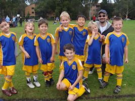
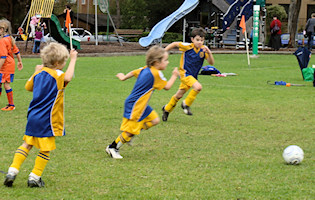
The boys had a great win today against All Saints Hunters Hill (5-0). Even with
a full-time goal keeper it didn’t stop our boys from scoring.
They are all starting to pass the ball well to each other and because of this
the goals were all spread amongst the boys once again this week.
Many thanks to our Coach & Ref - Zhiron for all your help, patience & motivation
of the boys. Player of the week this week goes to Rhys - Well done!
Another great game Jonathan, Jack, Rhys, Liam, Charlie, Yeong, Hugo & Ryan.
- Tracey Hinteregger
|
|
|
|
U8 Brown
2 - 2
|
|
This week both teams were very evenly matched and Ryde Saints broke through our
defence to score the first goal. This was soon matched by a goal from Sam making
it one all. The teams both made some very good attacking ru down the field but
is was Brooklyn who took the NRS U8 Brown team into the lead 2-1 which was held
until the last few minutes when the saints scored an equaliser.
Well down to everyone for your consistent efforts. Declan and Liam were very good
in the goals. Player of the week went to Liam for excellent effort in all areas
of the game.
- Sarah Robson
|
|
|
|
U8 Yellow
6 - 1
|
|
Another sunny day and the mighty Under 8 Yellows continue to perform at the
highest level. This week we see Harry and Jacob taking on Goal keeping duties
against the Gladesville Ravens. Again some pre-match warm ups to make sure the
skills and strategies are honed for maximum effect. Managers meet and greet
each other and get play under way shortly thereafter. North Ryde are running
East to West and already showing signs of taking charge. A few short passes
between Patrick and Fletcher has the ball well inside the Raven’s half. Another
pass onto Kate and then to Chris realises the opening goal 5 minutes into the
match. Ravens now have the advantage with the re-start kick of and begin to
make very good use of it. They continue to attack and, indeed, come close to
scoring on a number of occasions. Play for the remaining first half appears
reasonably well balanced, with both teams creating many opportunities to either
even, or open, up the game. Score-line at half time has North Ryde leading the
Gladesville Ravens one goal to nil.
A few strategic position changes are made and the second half commences. Frankly,
I can’t recall the exact detail as to what changes were made. Whatever was done,
it certainly paid off. All the kids were playing great football, passing the ball
amongst themselves to create lots of space and opportunities. Three minutes post
half time and Fletcher is screaming down the wing and flicks the ball to Patrick
who ploughs it into the back of the net. Fantastic play. Obviously, the team had
established a winning recipe and definitely understood the principle of team work
and the importance of player positioning. Play continues, and four minutes later
Chris scores the third goal for North Ryde after a 'tricky' manoeuvre around a
Raven defender and their Goal Keeper. Another kick off by the Ravens and showing
some improved form, they continue to push into the North Ryde half. However, a
wayward pass is intercepted by Kate who runs it out of North Ryde territory and
passes it onto Elliott, then to Damien and into open space. Ever vigilant, Harry
is strategically placed and just waiting for the golden opportunity. With a clear
run at goals, with only the keeper to contend with, Harry scores with seven
minutes of play remaining. Well at this point, the score is four nil to North
Ryde. The I can’t recall strategy is definitely proving to be a winning formula.
Not two minutes later, we again see similar plays to that which scored the
previous goal. Only this time, the names are changed and the ball is passed
between, well nearly almost all of the North Ryde players. Fletcher passes to
Elliott, then to Anuj and onto Harry. Another, really long pass from Harry to
Chris. Finally into open space, Kate receives the ball from Chris and runs the
ball past the Keeper ever so magnificently. Five minutes remaining, North Ryde
is showing no sign of backing off and anticipate keeping their undefeated record
in-tact. A few more plays and Damien scores the sixth goal. Two minutes later,
with only one minute of play remaining, the Gladesville Ravens also showing no
sign of conceding produce some magnificent play and finally get a well earned
goal.
Final score North Ryde six (6), Gladesville Ravens one (1).
Goal Scorers:
1. Chris Watt (2), 5 and 27 minutes from Kick off
2. Patrick Milne (1), 2 and half minutes into second half
3. Harry Grimes (1), 8 minutes from full time
4. Kate Kennedy (1), 5 minutes from full time
5. Damian Granet (1), 2 minutes left
Player of the Match - Anuj Savai
- David Watt
|
|
|
|
U9 Division 1
0 - 5
|
|
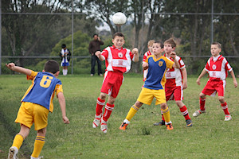
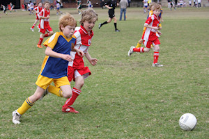
Our team knew they would have their work cut out for them, playing Kenthurst who
in round 2 proved to be a very challenging team to verse. The boys all worked
hard and played extremely well as a team. They should all be very proud of
themselves for the effort they put into the match.
The game definitely didn't appear to be dominated by Kenthurst like the score
reflects, however a quick goal by the opposition had us on the back foot and
feeling like it was going to be a long 40 minutes. Not to be though, straight
away Aden had a bustling run down the side line and a good pass that found
Daniel who had a crack at goal but narrowly missed. Now North Ryde were looking
forward to the next 35 minutes! After some more entertaining soccer, Kenthurst
scored again. This time it was Jay's turn to put us on the attack again with a
great kick through the middle that got our whole team moving forward.
Blake in goals the whole game worked had and gave 100% commitment to the team
the entire match. He saved many attempts at goal including a 1 on 1 penalty in
the second half, always putting his body on the line. The 3rd goal Kenthurst
scored was a controversial one with Blake stopping the ball and falling back as
he did so. The umpire obviously decided she though the ball had crossed entirely
over the line...
At half time, playing really well but 0-3 down the boys were mystified. The
second half began and saw the boys lift their intensity. Jarrod's long and
accurate throw in gained us metres and put us back into the oppositions half,
again looking like we could possibly score. However against the run of play
Kenthurst caught us napping and got another goal. After this Ben B and Ben J
in the back line showed great defense while Luke A and Ethan had good attacking
runs at speed, putting the pressure on Kenthurst to defend their goal. Late in
the match Daniel, looking like he would find the back of the net was unlucky to
be called off-side and Luke M had a great play stealing the ball off an opposing
player in a one on one tackle.
Unfortunately we didn't score and Kenthurst managed to once again get one in,
but the game was much more even than the final score suggests. Well done to all
the players for holding your positions, keeping your heads up and passing the
ball. Man of the match was Aden.
- Jo Nicol
|
|
|
|
U9 Division 3
2 - 2
|
|
Only one team has managed to actually beat us this year which is an impressive
record. Game 9 meant it was time to face them again. I was confident that the
boys could take it to West Ryde rovers after watching their improvement
throughout the season - and they did not disappoint.
The boys were psyched up for the game and went out hard. We were quickly
rewarded when Darcy put away a pass from Troy after just a minute and a half
to put us in front. The early goal was great for the teams confidence and they
continued to play well. Positional play was good and passing excellent. Nathan
was in goals for the first half and made some fantastic saves. West Ryde did
manage to get one past him but luckily it was called back for being offside.
At almost 14 minutes in Darcy scored the second of our goals putting us 2 ahead
and in a great position. This extra confidence coupled with some more great
defense and goalkeeping meant we maintained that advantage at half time.
Some slight positional changes for the second half took a little bit of getting
used to. Unfortunately, the opposition capitalised on this and found a hole in
our back line which managed to net them a goal about three minutes in. In similar
circumstances they also managed to grab another one less than three minutes later.
This levelled the scores and rattled the boys for a while. However, some slight
position adjustments and some encouragement saw them regain control of the game
slowly. This kept on in our favour with several shots at goal. The last five
minutes I thought were all in our favour with a couple of shots to the keeper,
an extremely close one from Raphael that hit the crossbar and some tantalising
balls drifting across the front of the goals. None paid off though and the full
time whistle left us at 2 all. This should keep us third in the table, albeit
probably sharing the position with one or two other teams. Our next two games
see the boys playing two teams we have not faced yet due to wash outs. Hopefully,
we can play as well as they have been and get some more wins.
Final score 2 all draw.
- Darren Mason (Manager)
|
|
|
|
U11 Division 1
4 - 1
|
|
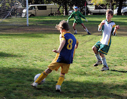
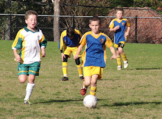
The match against Hills Hawks at the North Ryde Oval this morning was a rather
mixed bag of football, at times quite uncohesive and littered by scrappy play,
and at other times quick and entertaining, punctuated by moments of brilliance.
It was also one of the more physical games we have had to endure recently, and
there were times - particularly in the second half - when the Hawks seemed more
bent on playing the player, and sometimes even the ref, than the ball itself.
It is to the 11/1's credit that they bore the brunt of these altercations with
a sense of tolerance, and, if anything, channelled their frustration into a
period of total domination in the final ten to fifteen minutes of the match.
Eli pounced on an excellent through ball in the 11th minute of the match and
managed to guide it past the keeper to give North Ryde a 1 - 0 lead. Through
balls of this nature are becoming a feature in the game plan now and the strikers
are making the most of it. This effort however was mirrored by the Hawks later
in the first half and the scores drew level shortly before the half-time break.
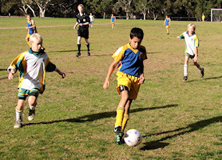
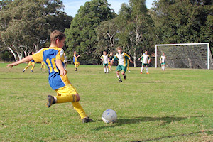
Everyone on the field was giving it their best, and the defence was called on
as much to keep the ball out of our danger zone as our midfielders and strikers
were called on to accompany the ball to the other side of the field. Lachlan
latched onto a cross early in the second half with a very well directed header
that found the back of the nets and gave North Ryde the lead again.
In the 40th minute David struck the ball sweetly from the edge of the area over
the heads of two defenders and the keeper to increase the lead by another goal.
Oscar P's attempt at a direct penalty was thwarted by an agile Hawks keeper, but
he still managed to bury the rebound by keeping a cool head, only to have it
overturned by the ref who ruled that the keeper had been subject to interference
during the second attempt. The 11/1's owned the field in the final minutes of the
game and were pressing their advantage to the max. Sam scored in the 49th minute
with another hot shot from the edge of the area that gave North Ryde their final
winning score of 4 goals to 1.
The skills and moves that are being drilled into the team during the week are
starting to transpire in the weekend game plan, slowed down only by an opposition
which is a lot more real on Saturday morning than it is against your own team
mates during training. They are progressing well in the competition despite the
complications of multiple substitutions and distributed game time, and this
weekend they received even further assistance, albeit unexpected, from Eastwood
St Andrews who ousted the top-placed WPH team and effectively gave North Ryde,
together with the points from their own win, top place on the ladder. Well done
team!
- Mark Howard
|
|
|
|
U11 Division 3
0 - 1
|
|
It was a hard fought match with, unfortunately, the result going the wrong way.
It looked like we might score in the first minute after a zig-zagging run by Zac,
but he couldn’t squeeze it past the goal keeper and it went wide. We were strong
all over the field, but so were the Hawks. Luke, Sam and Ahmed were good in
defence. Massie also just missed on scoring. It was 0-0 at half time.
Just after half-time we suffered from our slow start and Hawks kicked through
to score. In the second half Robert made a fearless save, putting his body on
the line and Thomas worked hard in defence. Salim was good in the midfield, but
we just couldn’t come up with the equaliser. It was a good, close game; hopefully
next time we will reverse the score.
- Martin Borri
|
|
|
|
U15 Division 2
1 - 3
|
|
The first 20mins was fantastic, with about 8 separate attacks and goal shoots on
the Thornleigh goal!
Unfortunately, to no avail as soft goal kicks or kicks directly to the goal keeper
kept North Ryde scoreless. Then we substituted 3 players off and then the North
Ryde team put the gear lever into reverse, talking about losing momentum after
a player exchange, then Thornleigh scored 0-1. This lifted Thornleigh even more
and our boys tried valiantly to make up, another uncertain moment in the North
Ryde goals (just like the week before against Redfield Lions) and again Lewis was
left high and dry, 0-2... At this point things really started to look grim.
Cameron in the second half was goal keeper and doing an excellent job! Thankfully
Tom was as keen as mustard and he scored a nice goal, 1-2. Perhaps, we can salvage
a draw? Thornleigh scored again 1-3, they deserved to win.
My thoughts on the game, if and buts I know. If we would of just scored in the
first 20 mins or not abandon our goal keeper, we could of at least drew that game!
The player of the match was Chris and the ‘cupcake’ trophy was presented by Greg
Butterfield. I would like to thank all the parents who came to support our team...
you do make a loud difference!
- Joe Rosenfels
|
|